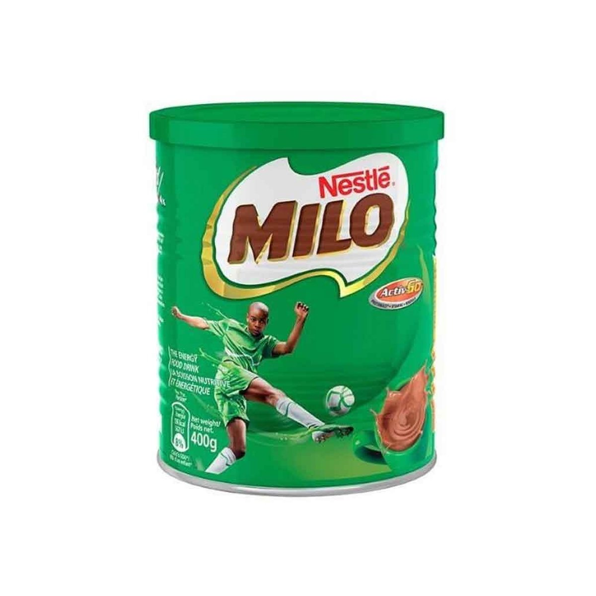
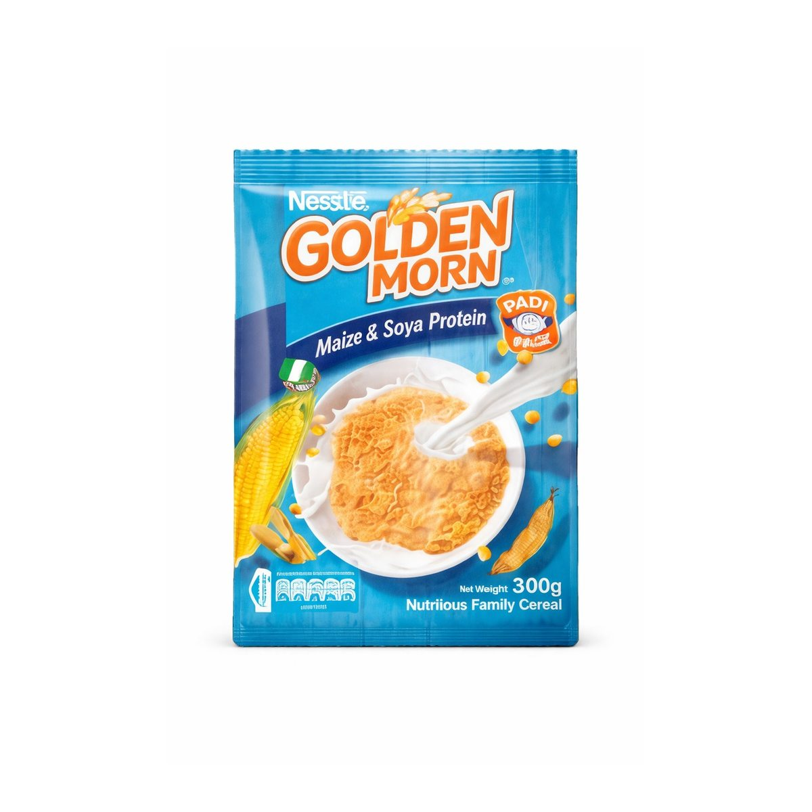
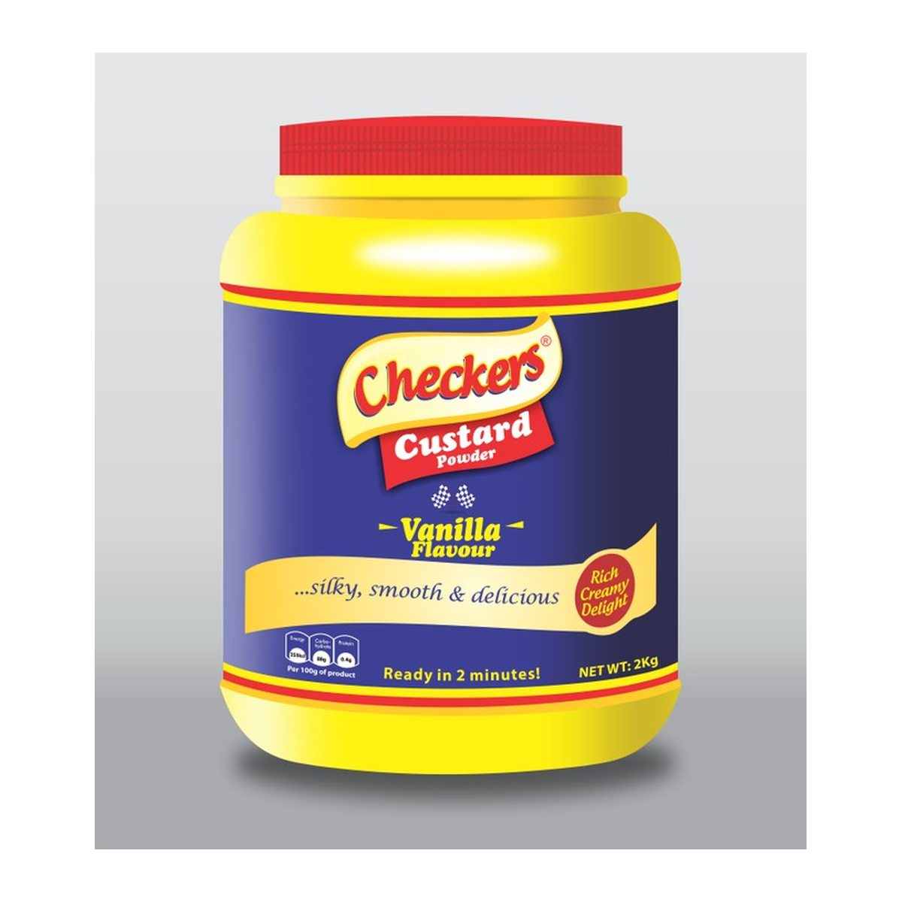
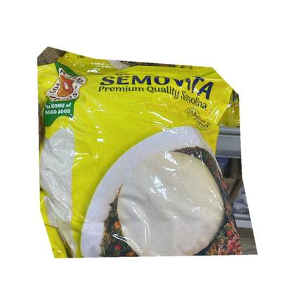
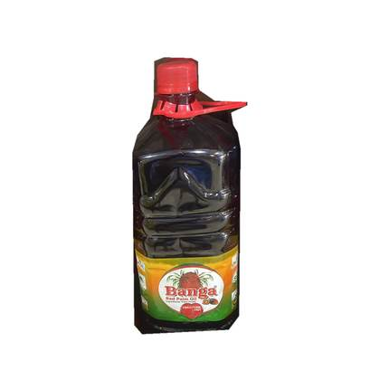
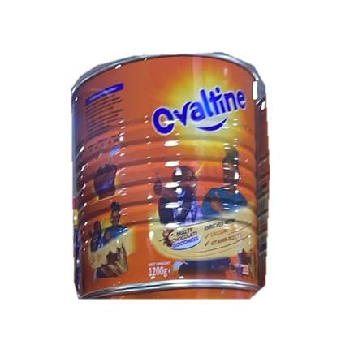
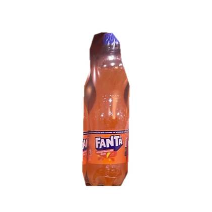
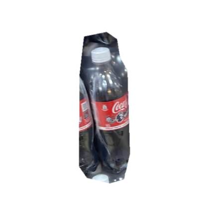

Find your products
Search our current in-stock catalogue by brand, product or category.
Authentic Nigerian flavours · Birmingham-area supplier
Find familiar Nigerian foods, cereals, spices, malt drinks and everyday essentials. Buy individually or ask for wholesale quantities. We accept enquiries and orders from customers across the UK and Europe; shipping eligibility, costs and timing are confirmed before purchase.
Retail shoppers first. Bulk buyers welcome. No complicated checkout.
Search our current in-stock catalogue by brand, product or category.
Add several products to one WhatsApp enquiry. Ask for retail or wholesale quantities.
Tell us your UK location or European destination so we can confirm product-specific shipping restrictions, costs and timing before accepting payment.
Real photographs of stocked products. Browse the full catalogue for sizes and WhatsApp quotations.

Milo Tin 400gAsk for a quote
Golden Morn 300gAsk for a quote
Checkers Vanilla Custard 2kgAsk for a quote
Golden Penny Semovita 1kgAsk for a quote
Okomu Banga Palm Oil 2LAsk for a quote
Ovaltine Tin 1.2kgAsk for a quote
Fanta OrangeAsk for a quote
Coca-ColaAsk for a quoteShop by category, from Milo and breakfast staples to spices and non-alcoholic drinks.
Milo, Bournvita, Ovaltine and milk products
Flour, beans & traditional staples
Authentic African flavours
Traditional cooking oils
Herbs & dried ingredients
Personal care products
Malt drinks and soft drinks
Traditional cooking tools
We source only the finest authentic products directly from trusted suppliers
Preserving cultural traditions through genuine Nigerian and West African products
Confirm product details, delivery options and pricing directly with our team before ordering
Bridging communities with the tastes and products they love from home
Browse products you know, or explore the ingredients for meals you love. Stocked brands and individual pack sizes are shown in the catalogue.
Explore hot drinks, powdered milk, custard and cereals.
Find Milo productsFind jollof seasonings and browse the wider spice collection.
Find jollof productsBrowse pounded yam flour, semolina and related Nigerian food staples.
Find yam productsLook through familiar non-alcoholic beverages, with prices confirmed on enquiry.
Find malt drinksOringo Distributions operates from the Birmingham area and handles individual and wholesale enquiries. We welcome orders from customers throughout the UK and Europe. Tell us your delivery country and chosen products so we can check destination-specific restrictions, delivery availability and charges before confirming your order. We will confirm whether delivery is possible and provide one final quoted price including applicable shipping charges, customs duties and import taxes, together with the estimated timeframe, before you commit to an order.
We operate from a warehouse rather than a walk-in shop. Please arrange any collection directly with our team rather than visiting without an appointment.
Ask About Delivery on WhatsAppOringo Distributions offers Nigerian groceries through its online product catalogue. Choose items and tap Buy Now to ask our team on WhatsApp about prices, pack sizes and delivery.
Buy Now opens a WhatsApp message for the selected product. You can confirm its pack size, quantity, pricing and delivery before agreeing to an order. There is no card checkout on this website.
We take UK delivery enquiries and confirm service availability, delivery charges and estimated times for the products and destination you provide.
Yes. We accept order enquiries from customers across Europe. Tell us your country and products so we can check import and food restrictions, shipping availability and delivery timing. Applicable customs duties, import taxes and shipping costs are included in your final WhatsApp quotation before you confirm an order.
Yes. Oringo accepts retail and wholesale enquiries. Send the products, pack sizes and quantities you need through WhatsApp for a quotation.
Oringo confirms product prices through WhatsApp enquiries. Shipping charges and exact order totals are discussed before you decide to buy.
Yes. Send Oringo a WhatsApp message with the product details. We can check whether it is available, but items not listed are not represented as in stock.